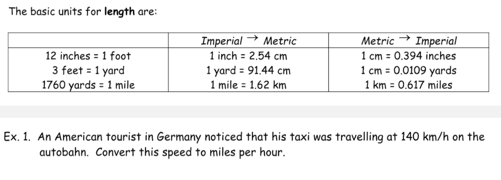
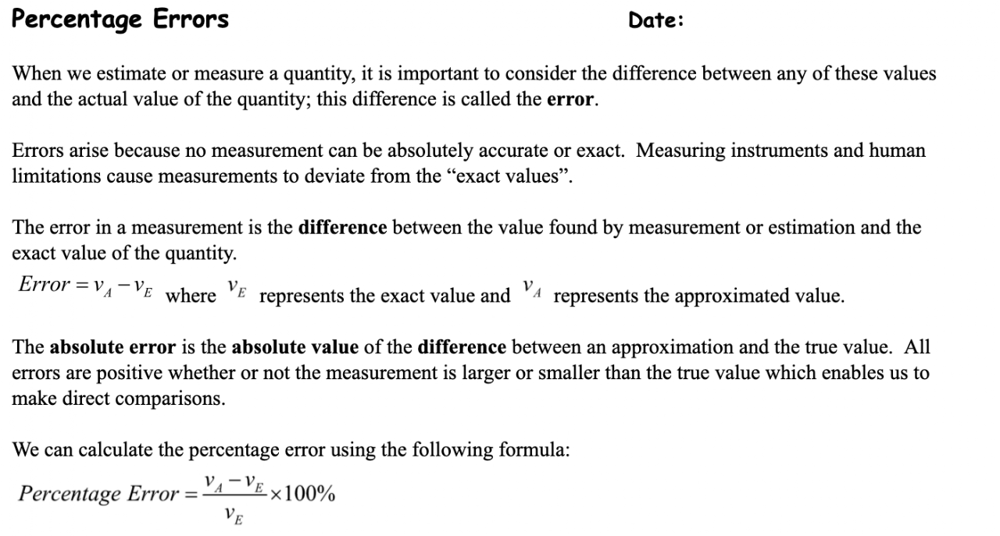
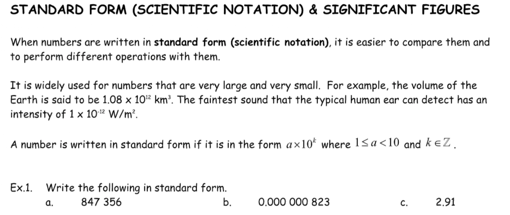
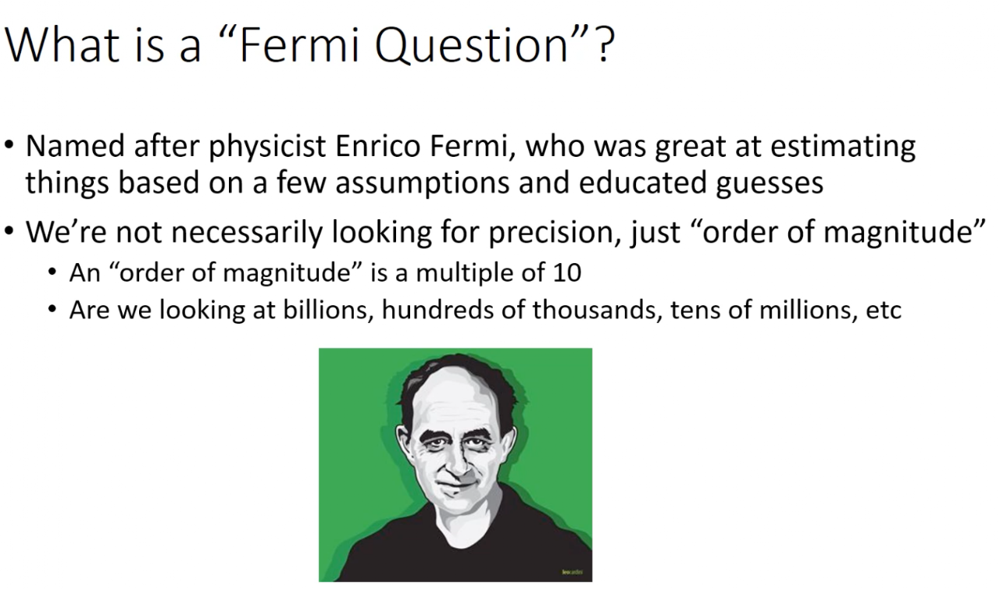
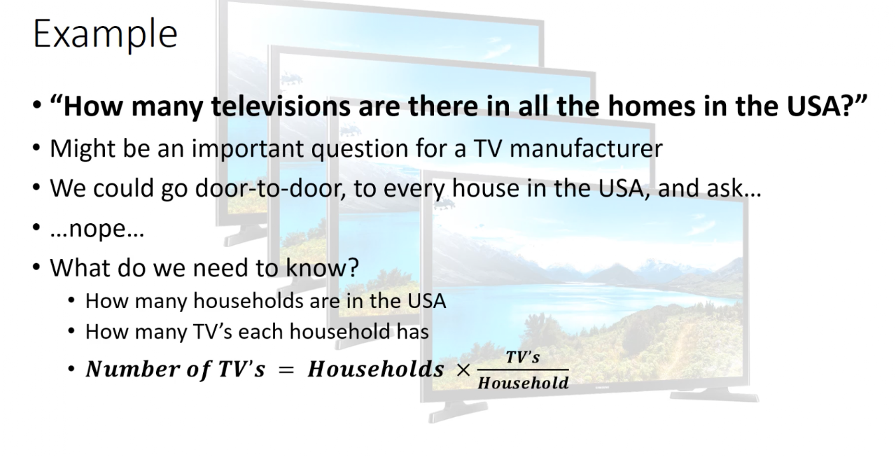
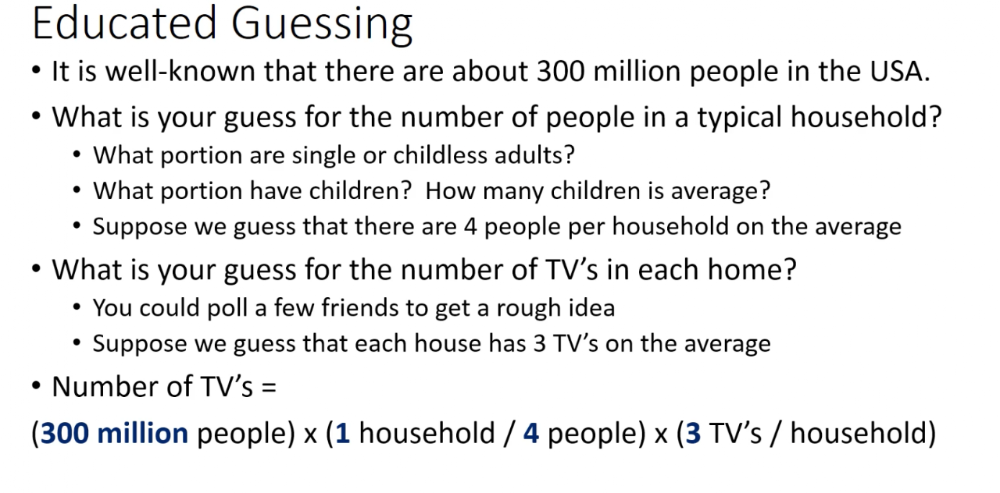
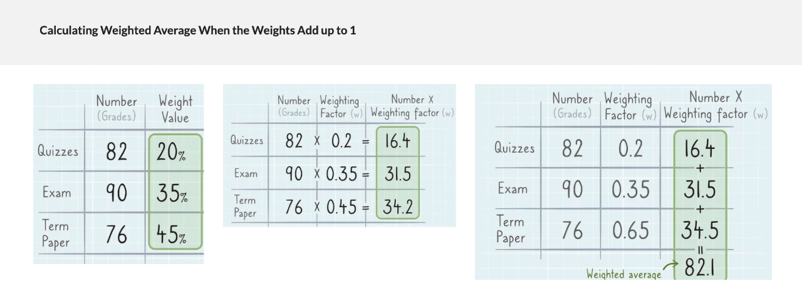

Overview of Unit 1
Contents: 1. Ratios and Rates 2. Percent and percentage error 3. Indices and scientific notation 4. Fermi Problems 5. Averages and Weighted Averages 6. Check Digits to Validate Identification Numbers
Vocabulary Terms: Ratio, Percentage error, Estimating, Scientific Notation, Fermi Estimate, Averages, Weighted Averages, Indices, Check Digits
Check-In, Course Outline (Aug. 4th, 2026)
Goal: Students can introduce themselves in writing and put it on Google classroom.
Welcome to AMDM Classroom!!!
This year, we will embark on an exciting journey to develop advanced decision-making skills, harnessing the power of Artificial Intelligence. Instead of focusing solely on manual calculations, our emphasis will be on learning how to effectively leverage cutting-edge technology to make informed decisions.
In our Advanced Mathematical Decision Making course, we will seamlessly integrate AI tools into all our activities. Through this approach, you will not only strengthen your inquiry and critical thinking skills, but also prepare yourselves to thrive in an ever-evolving, technology-driven world.
Let’s embrace the future together—get ready to grow, innovate, and succeed!
For today, Things to do.
- Sign into Canvas
- Visit the AMDM website!
In your notebook, for a Class activity: Class-Introduction
- Write your name and a bit of your background
- Name one thing you did during the summer break
- What are your hobbies?
Later this week, you will add the following items to your Word document and submit them in Canvas.
- What is your goal this year (be specific)?
- What is your plan after High School graduation?
- Add your photos
* Things to prepare for this course: Notebook, Pencil, and Chromebook
Math Policies, and Expectations (Aug. 5th, 2026)
Goal: Students can identify the Course Outline and Math Policies
- Review the first day of school
- Course Outline and Math Policies on the Math Website
ATTENDANCE
Attendance
- According to school policy, students with more than 8 unexcused absent days will not get credit for this subject.
- Students will be considered ‘absent’ if they check in after 15 minutes of teaching without notice.
- Parents/ students are allowed a total of 10 excused days per year (5 per semester) using parent notes.
PBIS CONDUCT
- Be respectful: Please do not interrupt other students; otherwise, you will be asked to leave the classroom after receiving two verbal warnings.
- Be ready: Your cellphone will be allowed to use in class only for educational purposes (A.I use for research, Quizes, Creating prompts)
- Be responsible: Your hall pass/ one pass at a time, no more than 5 minutes.
- Be a role model: I hope you do not take the final exam at the end of the semester.
3. Note-taking skills necessary for Notebook Check.
Class activity: Self-introduction
Rubric, and Sample Writing (Aug. 6 ~ 7th, 2026)
Goal: Students can identify the Math Rubric and preview sample writings
Review:
- Course Introduction
- Course Outline and Math policies
- Notebook Checking procedures.
For today, we will find out more about the following topics
- Rubric
- ASSESSMENTS
There are two types of assessments: Formative and Summative per Unit
- Multiple Formatives (40%) — Create a question per lesson, a short writing activity, or class activities, Math Notebook check
- Summative (60%) — An essay writing (1 page)
- One final project — A math project
- Participation points - Warm-up participation points and discussion points will be added to either formative or Summative tasks.
- Students are expected to complete the warm-ups and take video notes for the Formative assessment in their notebooks. The teacher will demonstrate how to show math working in class. You must show the working in your notebook to receive full credit.
- You have up to one week after the original due date of an assignment to submit it for full credit. If you submit your assignment after the grace period, the maximum grade you can receive is 75%.
- Homework is assigned every class and will be posted on Canvas. Absent students are expected to check the class website daily and will use one week to catch up to get the full credit.
- Homework will be checked regularly.
3. Class Activity - Create an account on these three AIs: Chat GPT, Gemini, Claude
Classwork: In a Google document,
- Write your name and a bit of your background
- Name one thing you did during the summer break
- What are your hobbies?
- What is your goal this year (be specific)?
- What is your plan after High School graduation?
- Add your photos
Submit them in the Self-Introduction folder on Canvas.
Exercise (Aug. 10th, 2026)
Goal: Students can review the Rubric and Sample Writings.
Warm-up: Copy the following into your notebook
- Using the Internet or A.I, find the definition of the words below.
- Context:
- Intent:
- Constraints:
- Visit the Math website and find the Rubric and Sample Writing page to do the following
Write 3 words each in red and blue in the rubric and write their definitions in your notebook. - Copy the Parts of a Good Math Prompt
- Context (e.g., "A car travels 50 miles...")
- Question (e.g., "How long will it take at 60 mph?")
- Intent (e.g., "Show step-by-step solution.")
- Constraints (e.g., "Assume constant speed. Use only algebra.")
Review (Aug. 11th, 2026)
Goal: Students will be able to make one paragraph for practice.
Warm-up: Copy the following
- Review: Creating a good prompt using Context, Question, Intent, and constraints
Classwork;
Today, using the prompt skill we learned yesterday, we will practice one-paragraph writing as a formative task
*Use A.I. and the 4 prompts: context, question, intent, and constraints to create a paragraph
Please refer to the sample attached.
Follow the instructions below.
- Open a Word document.
- Start with the heading and put the Title.
- Find the definition of "Weighted Average" and put it into the document.
- Add the formula for the Weighted Average to explain
- Make a paragraph of 150 words or so.
Please submit the Word doc in Canvas under the title "One Paragraph Exercise"
Review (Aug. 12th, 2026)
Goal: Students will be able to add more citations for references.
Warm-up: Please copy the following into your notebook.
- Write two reflections on the last two days' note-taking pages in your notebook.
- Video: Watch the video and write a 2–3 sentence summary of its main message in your notebook.
Video: The original page linked to "The video link" on YouTube, but the video URL was not recoverable from the source page. (See README.)
Class Activity:
- Revise the Weighted Average paragraph you wrote yesterday by consulting Claude.ai for additional reference. Decide which version is better and upload your final draft to Canvas under One Paragraph Exercise.
Exercise (Aug. 13th, 2026)
Goal: Students can find solutions for averages
Warm-up: Copy and solve the problem
- Determine the average score below
Math: 80,
English: 90,
PE: 100 - Find the "Weighted" average score below
Math: 80 (70% weighted),
English: 90 (20% weighted)
PE: 100 (10% weighted)
Today's Classwork
- I am putting in the self-introduction grade on Canvas now
- Please be prepared for your notebook check tomorrow.
- To enhance your learning, please try to fix your 'Weighted Average' paragraph again.
- You will be called on to receive feedback or comments on your one-paragraph exercise activity.
Notebook Check 1 (Aug. 14th, 2026)
Notebook Checking Preparation.
Your notebook should include all the headings, warm-ups, videos, and reflections from Aug. 10th to Aug. 12th.
The dates and Contents are as follows
- Aug. 10: Heading, warm-up, reflection
- Aug. 11: Heading, warm-up, reflection
- Aug. 12: Heading, warm-up, Video, reflection
Please put your grade on Canvas in the following form.
- 3 Headings: 6.7pts/H = 3x6.66=20pts
- 3 Warm-ups: 13.3 pts/W = 3x10=30pts
- 1 video: 30 pts/ V = 1x30 =30pts
- 3 reflections: 6.7pts/R =3x6.66=20pts
Total: 20+30+30+20= 100pts
Classwork: For the remainder of the period, collect the data from A.I.
- Using the three A.Is; ChatGPT, Claude, Gemini,
- Teach yourself on the Real-life examples of weighted average
- Carefully research a weighted average example with the calculations attached to it.
- Copy and paste it into a Word document and save it for later use.
Exercise (Aug. 17th, 2026)
Goal: Students can add a real-life example of a Weighted Average with proper citations.
Warm-up: Go to perplexity.ai, and ask about the following question
Q1. How many pounds of Premium coffee beans ($9.50/Ib) should be mixed with 2 pounds of Supreme coffee ($11.75/Ib) in order to make a Blend coffee at $10.00/Ib?
Classwork:
- Finish your Notebook check 1.
- Go back to "One paragraph practice" and open the document to add a real-life example of a Weighted Average to the paragraph.
- Teach yourself the real-life example and the calculation as well.
- Copy and paste it under the first paragraph.
- Finally, save the file in your Chromebook.
Lesson 1-1: Ratio (Aug. 18th, 2026)
Goals: Students can apply Proportion, Ratio to various settings (AMDM. QPR.2.1)
Warm-up: In your notebook, copy down and solve the following questions
Find the answers and show your work.
- According to Greg, perfect cherry pies have a ratio of 240 cherries to 3 pies. How many cherries does Greg need to make 9 perfect cherry pies? Explain what the answer means.
- Jaime can walk 40 dogs in 8 hours. How many dogs can he walk in 12 hours? Explain what the answer means.
📘 Story: “The Slushie Contest”
Maya, Jordan, and Rio decided to enter the slushie-making contest at their town festival. To make the perfect slushie, each person had to mix fruit syrup and crushed ice.
Maya used a recipe with 2 cups of syrup for every 5 cups of ice. Jordan used the same slushie machine but added 4 cups of syrup instead. Rio hadn't decided how much ice to use yet.
After tasting their slushies, they all agreed: "The best slushie has to have the right ratio of syrup to ice!"
Now, each of them is trying to figure out how to make their mix just right.
Class activity:
- Summarize the story.
- Go to Canvas and under the Creating Question 1 folder, put a question you might have about the slushie Contest and write a reason for it.
- Submit the task.
Classwork
- Please, add your daily reflection at the bottom of the notebook page.
Lesson 1-2: Ratio - continued (Aug. 19, 2026)
Goals: Students can take a video note on Ratio
Warm-up: Copy the following.
- Finish up the Creating Question 1 task from Yesterday: Put your idea or any question you might have about the slushie contest story into a Word doc along with your reasoning.
- Watch the video.
- Summarize the video into your notebook.
Video Summary: Watch the videos and Copy down all the video notes in your notebook.
Lesson 1-3: Ratio - continued (Aug. 20, 2026)
Goals: Students will research and write the definition, explanation, and formula for ratios using only the internet.
Warm-up: Please write the following instructions in your notebook:
Note: You will not use your cellphone today.
- Go to Canvas and locate the assignment: Unit 1 Ratio Definition and Explanation Paragraph.
- In a Word document, start with a heading and title.
- Using only the internet (no AI), research the definition, explanation, and formula of ratios.
- Edit your paragraph and cite your sources properly.
- Submit your completed document on Canvas
Classwork: write your reflections
- What do you know?
- What do you want to know?
Quiz (Aug. 21, 2026)
Goals: Students will take a Quiz on Canvas
Warm-up: Copy the following.
- Go to Canvas and take the Quiz: Unit 1 Ratio Problems
Please write the questions and your working with the answer into your notebooks - Watch another video on the right and take the video notes
- Submissions for the following tasks will not be accepted after today.
One Paragraph Exercise,
Notebook Check 1
Creating Question 1
Lesson 1-4: Rates - continued (Aug. 24th, 2026)
Goals: Students can solve problems involving ratios in mechanical contexts. (AMDM. QPR.2.2)
Warm-up
- Copy and solve Ex. 1, using the table below. After you take notes from the video, put your cellphone in your backpack.

- Watch the video on the right and summarize it in your notebook
- Go to Canvas and finish the Quiz: Unit 1 Ratio Problems
Please write the questions and your working with the answer into your notebooks - No more late work for One Paragraph Exercise, Notebook Check 1 and, Creating Question 1.
Lesson 1-5: Rates - continued (Aug. 25th, 2026)
Goals: Students can find a real-life example of Rate and copy it into a notebook. (AMDM. QPR.2.2)
Warm-up: Copy the following into your notebook.
- A rate is a ratio that compares quantities in different units. Rates are commonly found in everyday life. The prices in grocery stores and department stores are rates. Rates are also used in pricing gasoline, tickets to a movie or sporting event, and in paying hourly wages and monthly fees.
- Watch the video on the right and summarize it in your notebook.
Classwork: Take a quiz on Canvas.
- Go to Canvas, locate Unit 1: Rate Problems, and take it.
- Using A.I., copy the quiz questions and work the answers into your notebook.
- Use AI until 20 minutes before the class ends, and fill out the reflection during that time.
- (No one should have a cellphone in their hands for the last 20 minutes)
Lesson 1-6: Rates (Aug. 26th, 2026)
Goal 1: Students can create questions on the story
Warm-up: Copy the following story into your notebook.
Story: “The Pizza Box Challenge 🍕📦
Three friends — Ava, Ben, and Chris — fold pizza boxes at a pizzeria.
- Ava folds 24 boxes in 3 hours.
- Ben folds 35 boxes in 5 hours, but sometimes he takes a 5–10 minute phone call during work.
- Chris is new and wants to figure out how fast he needs to work to keep up with the team.
The manager says: “We need 120 boxes ready before the dinner rush, but sometimes extra orders come in halfway through, so the total number of boxes may increase!”
Class Activity:
- Take your time to fully understand the situation and organize your thoughts.
- Share your thoughts with your partners
- In your notebook,
Write what you know:
Write what you don't know:
Write what questions you have:
Lesson 2-1: Percentage (Aug. 27th, 2026)
Goal: Students can understand and know Percentage.
Warm-up: (You do not need a cellphone today.)
- Convert these into percentages.
1) 5/6 2) 0.25 - A number is increased by 40% and then decreased by 40%. Find the net increase or decrease per cent.
Classwork: Do not use AI on your cellphone
- Go to Canvas and locate yesterday's assignment, "The Pizza Box Challenge."
- Write a question about "The Pizza Box Challenge."
- In a Word document under Unit 1 Creating Question 2, explain the reason for your question.
- Complete any reflections for the previous day's notes.
- Prepare for Notebook Check 2.
Lesson 2-2: Percentage error (Aug. 28th, 2026)
Goal 1: Students can understand and know Percentage Error
Goal 2. Students can use the internet to research Percentage Error applications in real life. (AMDM. MM.1.4)
Warm-up
Copy and solve the Exercise 1
Ex. 1. You estimate a fence’s length to be 70 m and when you measure it, its true length is 78.3 m. Find, correct to one decimal place:
- the error
- the absolute percentage error
Classwork: Copy the following into your notebook

Lesson 2-3: Percentage error (Aug. 31, 2026)
Goal: Students can create a good prompt using Context, Question, Intent, and Constraints
Warm-up: Copy the following into your notebook.
Prompts for Percentage Error Essay.
1) For the first paragraph;
Poor: "What is percentage error?"
Better: "Define percentage error and show the formula."
Best: "Act as a math teacher. Explain the concept of 'Percentage Error' for a high school math paper. Include its formal definition, why it is used in real life, and its mathematical formula. Keep it concise and formatted as an introductory paragraph."
2) For the second paragraph;
Poor: "Give me an example of percentage error."
Better: "Give me a real-life example of percentage error with numbers and solve it."
Best: "Create a realistic scenario using percentage error (such as estimating concert attendance vs. actual turnout). Show the step-by-step calculation clearly, explicitly explaining how the absolute value bar applies when subtracting actural value from Estimated value. Write this as a second paragraph continuing from the definition above."
Now, use A.I. to test each prompt and see if there is any difference.
Get ready for the notebook check 2 that includes 8 days' notes from Aug. 18 to Aug. 27
Video Summary:
- Watch the video and summarize it.
Notebook Check 2 (Sep 1, 2026)
No A.I. use on your Cellphone today!
Your notebook should include all the headings, warm-ups, videos, and reflections from Aug. 18th to Aug. 27th.
- Aug. 18: Heading, warm-up, reflection
- Aug. 19: Heading, warm-up, video, reflection
- Aug. 20: Heading, warm-up, reflection
- Aug. 21: Heading, video, reflection
- Aug. 24: Heading, warm-up, video, reflection
- Aug. 25: Heading, warm-up, video, reflection
- Aug. 26: Heading, warm-up, reflection
- Aug. 27: Heading, warm-up, reflection
Notebook grading: Put your grade on Canvas
- 8 Headings: 2.5 pts/H = 8x2.5 =20
- 7 Warm-ups: 4.28 pts/W = 7 x 4.28 = 30
- 4 videos: 7.5 pts/ V = 4 x 7.5 =30
- 8 reflections: 2.5 pts/R = 8 x 2.5 = 20pts
Warm-up: Copy the story into your notebook.
📘 Story: “The School Fundraiser”
Emma, Leo, and Chris are organizing a fundraiser to help buy new books for their school library.
Their goal is to raise $500 in total. After the first week, they had already collected $125. By the middle of the second week, they raised another $75.
They made a big sign to show their progress and update the amount each day.
Chris said, “It would be cool if we could show how much we’ve raised as a percentage of our goal!”
Now the team wants to know how far they’ve come — and how far they still need to go.
Class activity: In your notebook, come up with a question and provide a reason for the question.
Do not write more than 3 sentences!
Lesson 3-1: Exponents (indices) and Scientific Notation (Sep. 2nd, 2026)
Students can solve problems using very large or small number. (AMDM QPR. 2.3)
Warm-up:
- Write in exponent form and find the value in natural form.
- 2 x 2 x 2 x 2 x 3 x 3 x 3 x 3
- 10 x 10 x 10 x 10
- 0.1 x 0.1 x 0.1 x 0.1 x 0.1
- Write in multiplication form and find the value
- 2+2+2+2+3+3+3+3
- 10+10+10+10
- 0.1+0.1+0.1+0.1+0.1
Classwork:
- Prepare for your summative task: we will try to write the first two paragraphs this Friday
- Go to Canvas to take the Quiz- Unit 1 Percent: copy the questions and working in your notebook.
Lesson 3-2: Exponents (indices) and Scientific Notation (Sep. 3rd, 2026)
Students can solve problems using very large or small numbers. (AMDM QPR. 2.3)
Warm-up: Copy and find the value of each exponent.
- 3^2 =
- 3^1 =
- 3^0 =
- 3^-1 =
- 3^-2 =
Why isn't 3^0 "Zero"? Explain it in your notebook.
Classwork:
Watch the following videos and take the notes down
Classwork:
- Finish the Unit 1 Percent Quiz from yesterday.
- Don't forget to copy the questions and show your work toward the solution.
Summative task topics on Tuesday. Choose one of the following topics:
- Weighted Average,
- Ratio or/ and Rate,
- Percentage, or / and Percentage Error
- Scientific Notation.
Lesson 3-3: Scientific Notation (Sep. 4th, 2026)
Students can calculate and interpret indices. (AMDM. QPR.3.2)
Warm-up: Copy the following of Scientific Notation and solve the problem

Classwork:
- Watch the video and copy the notes.
- Summative topics for Wednesday's task. Choose one of the following topics: Weighted Average, Ratio, Rate, Percentage, Percentage Error, or Scientific Notation.
- Prepare your prompt for the first paragraph and write it in your notebook.
- No school on Monday.
Lesson 3-4: Scientific Notation (Sep. 8th, 2026)
Goal: Students can collect the information on Scientific notation and take a quiz
Warm-up:
- Find Georgia's exact population in 2025, convert it to scientific notation, and calculate the error between the exact value and its scientific-notation form to determine whether the rounded form is acceptable.
- Write down the definition of "Scientific Notation" and an explanation of it in your notebook
(For your information, click this)
Classwork:
- Go to Canvas and take Unit 1 Scientific Notation quiz
- Copy the questions and work from A.I. in your notebook
Summative Task 1 (Sep. 9~10th, 2026)
Goal: Students can write an essay on the chosen topic.
Summative Test 1: Choose one of the following topics:
Weighted Average, Ratio, Rate, Percentage, Percentage Error, or Scientific Notation.
- Open a Word document
- Collect information from AI or the Internet for the first two paragraphs.
- Write your reflection in the third paragraph.
- Submit it on Canvas under Summative Test 1
Please ensure that you consider the appropriate writing format.
Rubric for the task.
- Writing format (20 pts); 130~150 words per paragraph.
- Research (20 pts); Two citations and high-quality information."
- Math process (20 pts); Calculations in the second paragraph."
- Reflection skills (20 pts); What did you learn? Discuss implications, meaningfulness, or importance."
- Math applications (20 pts); Where else could you use it, and how does it impact your decision-making?
No Cellphone use other than A.I. research during the testing period.
- Be more attentive to 4, and 5th items and be more critical and refelctive.
* Your Summative task will not be as generous as the formative one.
* Don't get surprised when your current grades drop.
Lesson 3-5: Lesson 2&3 review (Sep. 14th, 2026)
Goal: Students can combine scientific notation & Percentage Error to make a decision
Warm-up: Copy and solve the questions
Cellphone Policy: Cellphone policy is mandated by state law.
- Find the total number of housing units in Georgia.
- Turn the number into Scientific Notation
- Find the Percentage Error between the scientific notation and the real housing units.
- Tasks to be done today
- Complete and submit Summative Test 1
- Complete the Unit 1 Scientific Notation Quiz
Lesson 4-1: Fermi and Estimating Big Numbers (Sep. 15th, 2026)
Goal: Students can estimate numbers through "Fermi Problems" (AMDM. QPR.3.2)
Warm-up
Q1. How many people live in Georgia?
Q2. How many households are there in Georgia?
Q3. How many microwaves are sold in Georgia every year?
Provide a reason for how you get the number of microwaves sold in Georgia every year
Classwork;
- Watch the video below and get the summary with 2~3 sentences
- Don't forget to write a reflection at the bottom of your notebook page.
Lesson 4-2: Fermi and Estimating Big Numbers (Sep. 16th, 2026)
Goal: Students can understand Fermi's Problem. (AMDM. QPR.3.2)
Warm-up: Copy the question below and solve it
Q1. If you are going to fill the empty Math classroom with ping-pong balls, how much money do you need to pay for ping-pong balls? Write down the process.
Q2. Copy the following

Classwork:
- Watch and copy the video's notes below, or summarize the video
(Go to YouTube with your Chromebook: Fermi Questions by Ken Schwartz)
- Finish the missing quizzes: Unit 1 Percent, Unit 1 Scientific Notation
Lesson 4-3: Fermi and Estimating Big Numbers (Sep. 17th, 2026)
Goal: Students can estimate numbers, through "Fermi Problems" (AMDM. QPR.3.2)
Warm-up: Copy the following into your notebook


Class work:
- Organize your notebook from Sep. 1st to Sep. 16th for Notebook Check 3 this Friday.
Notebook Check 3 (Sep 18, 2026)
Notebook Checking Preparation.
Your notebook should include all the headings, warm-ups, videos, and reflections from Sep.1 to Sep. 16
- Sep. 1: Heading, Warm-up, reflection
- Sep. 2: Heading, Warm-up, reflection
- Sep. 3: Heading, Warm-up, Video, reflection
- Sep. 4: Heading, Warm-up, Video, reflection
- Sep. 8: Heading, Warm-up, reflection
- Sep. 14th: Heading, Warm-up, reflection
- Sep. 15th: Heading, Warm-up, Video, reflection
- Sep. 16th: Heading, Warm-up, video, reflection
Notebook grading on the Canvas,
- 8 Headings: 2.5pts/H = 8x2.5=20
- 8 Warm-ups: 3.75 pts/W = 8 x 3.75 = 30
- 4 videos: 7.5 pts/V = 4 x 7.5 =30
- 8 reflections: 1.25 pts/R =8x1.25 = 20
Total: ________
Lesson 5-1: Weighted Average (Sep. 21st, 2026)
Goal: Students can use averages and weighted averages to make decisions. (AMDM.QPR.3.1)
Warm-up: Copy the questions and solve them
- Find the average of the four scores.
Formative Assessment: 98
Minor Summative Assessment: 85
Major Summative Assessment: 72
Final Exam: 70 - Find the Weighted Average of the scores below
Formative Assessment (10% weight): 98
Minor Summative Assessment (20% weight): 85
Major Summative Assessment (50% weight): 72
Final Exam (20% weight): 70
Classwork:
- Go to Canvas to take a Quiz: Unit 1 Weighted Average
- Notebook Checking continues today
Lesson 5-2: Weighted Average 2 (Sept. 22nd, 2026)
Goal: Students can use averages and weighted averages to make decisions. (AMDM.QPR.3.1)
Warm-up: Copy into your notebook.
Suppose there are several classes in a school, and each class has a different number of students.
For example:
- Class 1: average score 80, 10 students
- Class 2: average score 70, 30 students
- Class 3: average score 90, 20 students
If you simply take the average of the three class means, it will not be accurate because the number of students in each class is different. Here, the weights (number of students) are not normalized and add up to 60.
To find the correct weighted average, calculate as follows: Weighted Average=(80×10)+(70×30)+(90×20)/(10+30+20)=(800+2100+1800)/60 =4700/60≈78.33
This method uses the non-normalized weights (number of students for each class) and divides the total by the sum of all weights (total number of students), giving you the true overall average that reflects class sizes.
Classwork: Why is the example above different from the normal Weighted Average?

How to write a good Math Essay into google classroom
Goal: students will be able to understand the test rubric by comparing the two sample essays. Students can also know how to show a reference to the source of information
Warm-up:
Watch the video below and outline the important factors of a good essay.
Essay Rubric for Secondary and Major Summative Assessment
[Document: AMDM Classroom Activity Rubric(20~21).docx — owner to add sharing link]
Summative Sample Essay 1: How would you grade the following essay according to the rubric?
[Document: sample essay(Jane Doe).docx — owner to add sharing link]
Summative Sample Essay 2: How would you grade the following essay according to the rubric?
Major Summative Assessment
Goal: Students will write an Essay about one topic in Unit 1.
Class Activity:
Students will write an Essay on one of the following topics: Scientific Notation, Fermi Problems, and Weighted Average
For your Math Essay,
- choose one of the topics; Scientific Notation, Fermi problem, Weighted Average
- put your collected information resources into two paragraphs.
- In the first paragraph, Collect the definition and explanation of your chosen topic with citations,
- in the second paragraph, find a problem-solving real-life example and put it into the paragraph with citations.
- In the third paragraph;
- add what you learned from the real-life example and the topic
- Why it is meaningful and important to you
- add where else you might mathematically use it in a different situation.
- add how you can make a better decision in the situation.
Sources & Further Reading
- Intro to ratios (Khan Academy)
- Understanding equivalent ratios (Khan Academy)
- Powers of zero (Khan Academy; URL quoted from Khan Academy's own FAQ on the video page)